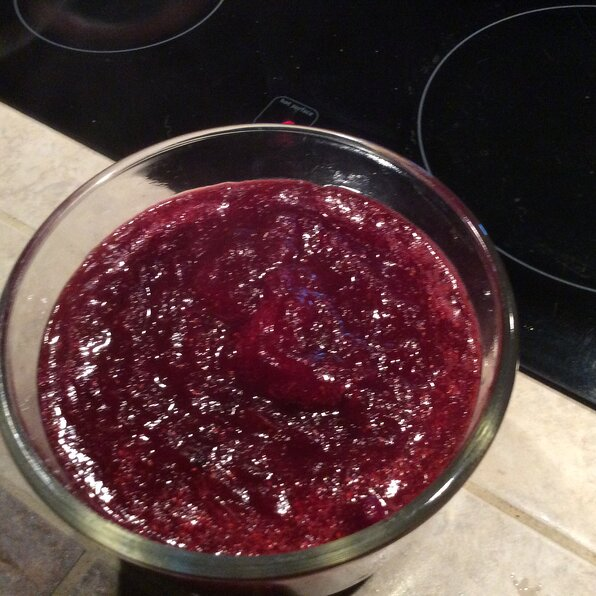

Cranberry Sauce

Description
This tasty cranberry sauce will satisfy your sweet tooth and make everyone come back for Thanksgiving! 11 servings.
Ingredients
- 12 ounces cranberries
- 1 cup white sugar
- 1 cup of orange juice
- In a medium sized saucepan over medium heat, dissolve the sugar in the orange juice. Stir in the cranberries and cook until the cranberries start to pop (about 10 minutes). Remove from heat and place sauce in a bowl. Cranberry sauce will thicken as it cools.